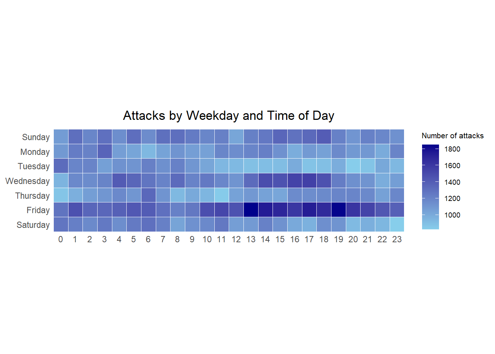
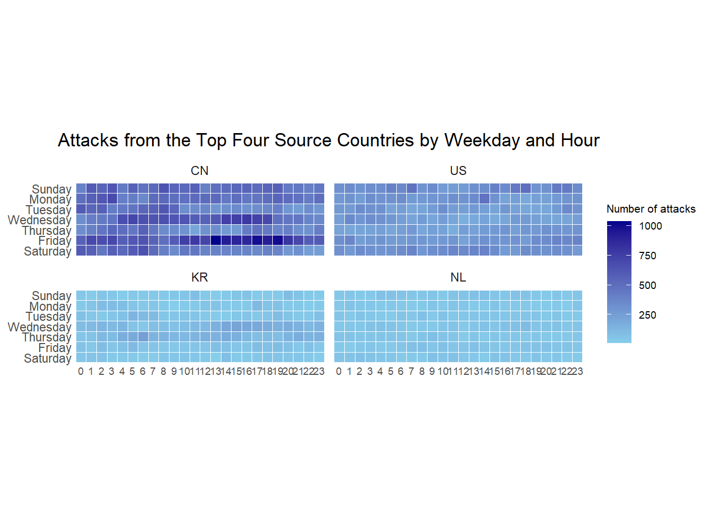
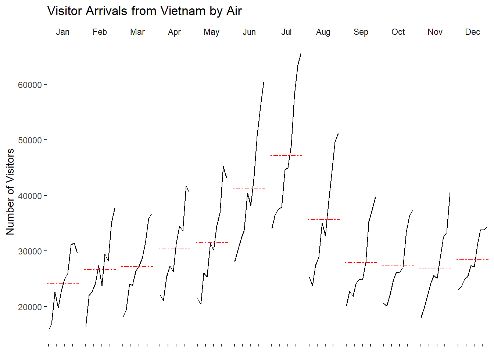
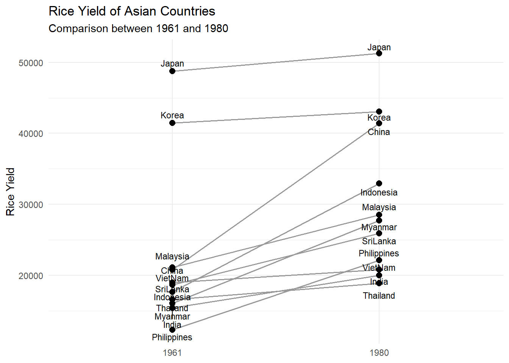
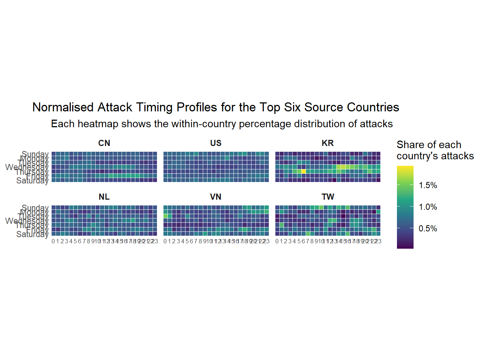
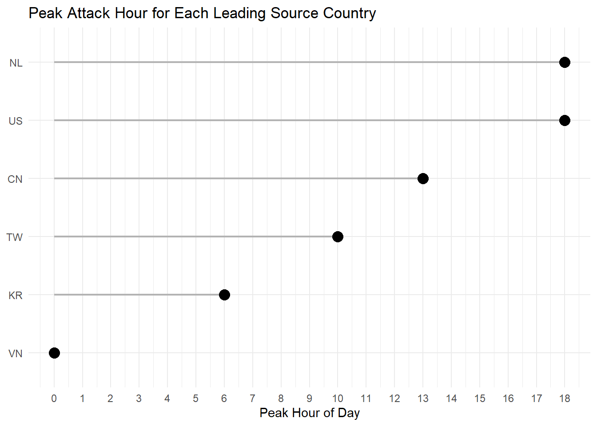
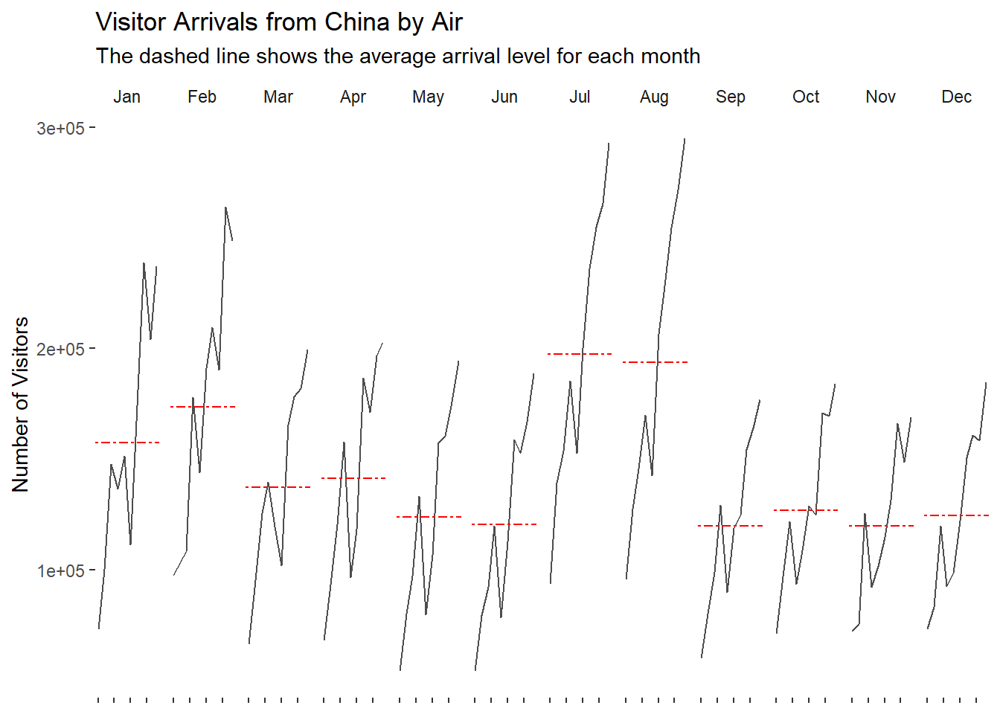
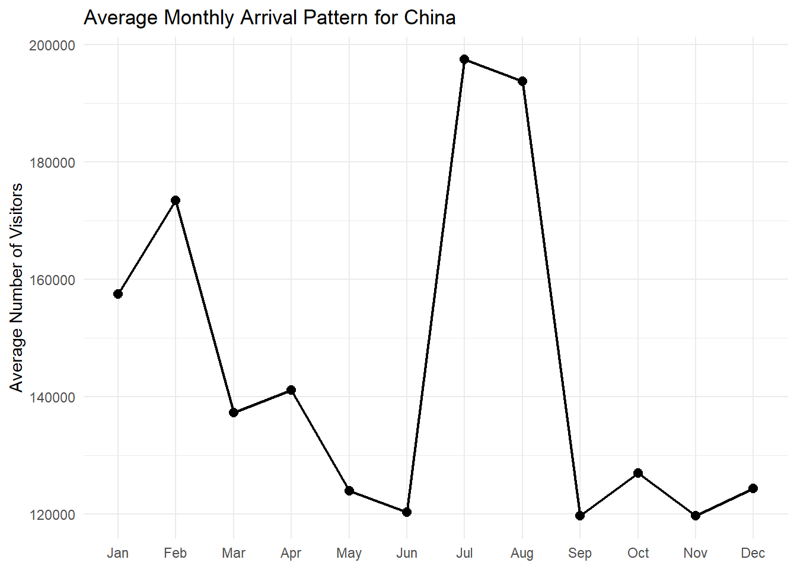
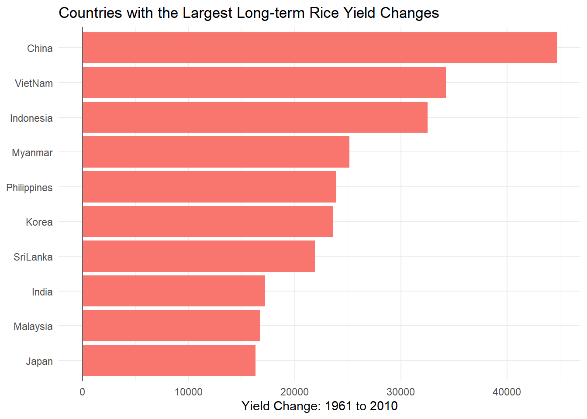
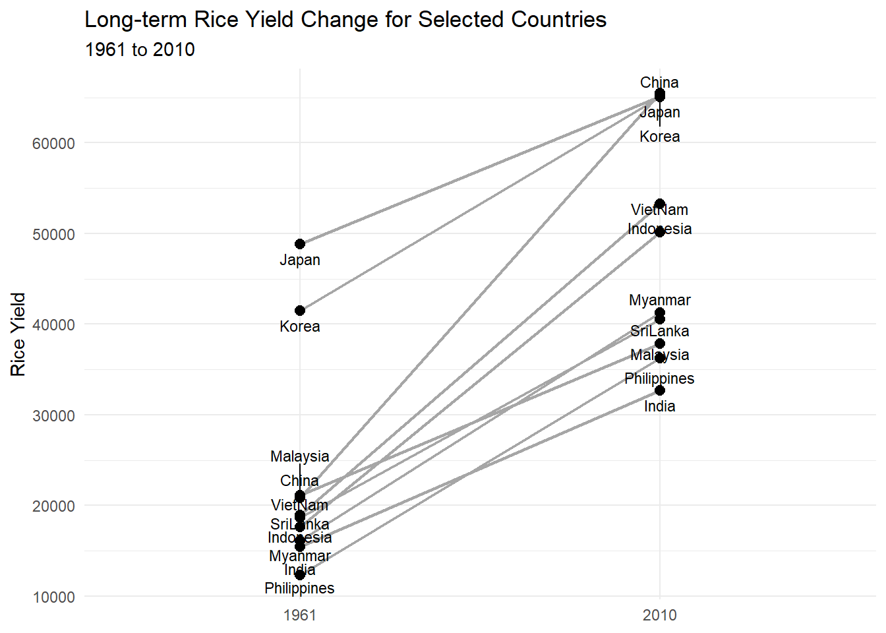

packages <- c(
"scales", "viridis", "lubridate", "ggthemes",
"gridExtra", "readxl", "knitr", "data.table",
"tidyverse", "DT", "ggrepel"
)
pacman::p_load(char = packages)Hands-on Exercise: Visualising and Analysing Time-oriented Data
Overview
This hands-on exercise follows the learning flow of Chapter 17 of R for Visual Analytics. The teacher example introduces three approaches for visualising time-oriented data: calendar heatmaps, cycle plots, and slopegraphs. The Self Trying section extends these methods with additional comparisons and a clearer analytical focus.
The project folder already includes the three data files required for this exercise:
data/eventlog.csv
data/arrivals_by_air.xlsx
data/rice.csvThe uploaded datasets were checked before packaging. The event log contains 199,999 records, the visitor-arrival workbook covers January 2000 to December 2019, and the rice dataset covers 11 countries from 1961 to 2010.
1 Getting Started
1.1 Loading R packages
Teacher Example
2 Plotting Calendar Heatmaps
2.1 Importing the event log data
The event log records cyber attacks. Each row contains a timestamp, a source country, and the time zone associated with the source IP address.
attacks_raw <- read_csv("data/eventlog.csv", show_col_types = FALSE)2.2 Examining the data structure
kable(head(attacks_raw))| timestamp | source_country | tz |
|---|---|---|
| 2015-03-12 15:59:16 | CN | Asia/Shanghai |
| 2015-03-12 16:00:48 | FR | Europe/Paris |
| 2015-03-12 16:02:26 | CN | Asia/Shanghai |
| 2015-03-12 16:02:38 | US | America/Chicago |
| 2015-03-12 16:03:22 | CN | Asia/Shanghai |
| 2015-03-12 16:03:45 | CN | Asia/Shanghai |
2.3 Preparing weekday and hour fields
To avoid errors caused by different Windows language settings, the code derives weekday labels from numeric weekday values rather than relying on the computer locale.
make_hr_wkday <- function(timestamp, source_country, tz) {
local_time <- lubridate::with_tz(
timestamp,
tzone = tz[1]
)
tibble(
source_country = source_country,
wkday_num = ((lubridate::wday(local_time) + 5) %% 7) + 1,
hour = lubridate::hour(local_time)
)
}
wkday_labels <- c(
"Monday", "Tuesday", "Wednesday", "Thursday",
"Friday", "Saturday", "Sunday"
)
wkday_levels <- c(
"Saturday", "Friday", "Thursday", "Wednesday",
"Tuesday", "Monday", "Sunday"
)
attacks <- attacks_raw %>%
group_by(tz) %>%
summarise(
processed = list(
make_hr_wkday(timestamp, source_country, tz)
),
.groups = "drop"
) %>%
unnest(processed) %>%
mutate(
wkday = factor(
wkday_labels[wkday_num],
levels = wkday_levels
),
hour = factor(hour, levels = 0:23)
)kable(head(attacks))| tz | source_country | wkday_num | hour | wkday |
|---|---|---|---|---|
| Africa/Cairo | BG | 6 | 22 | Saturday |
| Africa/Cairo | TW | 7 | 8 | Sunday |
| Africa/Cairo | TW | 7 | 10 | Sunday |
| Africa/Cairo | CN | 7 | 13 | Sunday |
| Africa/Cairo | US | 7 | 17 | Sunday |
| Africa/Cairo | CA | 1 | 13 | Monday |
2.4 Building a basic calendar heatmap
The first heatmap shows the overall distribution of attacks by weekday and hour of day.
grouped_attacks <- attacks %>%
count(wkday, hour) %>%
drop_na()
ggplot(
grouped_attacks,
aes(x = hour, y = wkday, fill = n)
) +
geom_tile(colour = "white", linewidth = 0.1) +
coord_equal() +
scale_fill_gradient(
name = "Number of attacks",
low = "skyblue",
high = "darkblue"
) +
labs(
x = NULL,
y = NULL,
title = "Attacks by Weekday and Time of Day"
) +
theme_tufte(base_family = "Arial") +
theme(
axis.ticks = element_blank(),
plot.title = element_text(hjust = 0.5),
legend.title = element_text(size = 8),
legend.text = element_text(size = 7)
)
2.5 Identifying the top four source countries
attacks_by_country <- attacks %>%
count(source_country, sort = TRUE) %>%
mutate(percent = percent(n / sum(n)))
kable(head(attacks_by_country, 10))| source_country | n | percent |
|---|---|---|
| CN | 85243 | 42.62171% |
| US | 48684 | 24.34212% |
| KR | 12648 | 6.32403% |
| NL | 8572 | 4.28602% |
| VN | 6340 | 3.17002% |
| TW | 3469 | 1.73451% |
| GB | 3266 | 1.63301% |
| FR | 3252 | 1.62601% |
| UA | 2219 | 1.10951% |
| DE | 2055 | 1.02751% |
2.6 Preparing the top-four-country data
top4 <- attacks_by_country %>%
slice_head(n = 4) %>%
pull(source_country)
top4_attacks <- attacks %>%
filter(source_country %in% top4) %>%
count(source_country, wkday, hour) %>%
mutate(
source_country = factor(
source_country,
levels = top4
)
) %>%
drop_na()2.7 Plotting multiple calendar heatmaps
ggplot(
top4_attacks,
aes(x = hour, y = wkday, fill = n)
) +
geom_tile(colour = "white", linewidth = 0.1) +
coord_equal() +
scale_fill_gradient(
name = "Number of attacks",
low = "skyblue",
high = "darkblue"
) +
facet_wrap(~source_country, ncol = 2) +
labs(
x = NULL,
y = NULL,
title = "Attacks from the Top Four Source Countries by Weekday and Hour"
) +
theme_tufte(base_family = "Arial") +
theme(
axis.ticks = element_blank(),
axis.text.x = element_text(size = 7),
plot.title = element_text(hjust = 0.5),
legend.title = element_text(size = 8),
legend.text = element_text(size = 7)
)
3 Plotting a Cycle Plot
3.1 Importing visitor-arrival data
air <- read_excel("data/arrivals_by_air.xlsx") %>%
mutate(
`Month-Year` = as.Date(`Month-Year`),
month = factor(
month(`Month-Year`),
levels = 1:12,
labels = month.abb,
ordered = TRUE
),
year = year(`Month-Year`)
)3.2 Extracting Vietnam arrivals
Vietnam <- air %>%
transmute(
arrivals = as.numeric(.data[["Vietnam"]]),
month,
year
) %>%
filter(year >= 2010)3.3 Computing monthly averages
vietnam_monthly_average <- Vietnam %>%
group_by(month) %>%
summarise(
avgvalue = mean(arrivals, na.rm = TRUE),
.groups = "drop"
)3.4 Plotting the cycle plot
ggplot() +
geom_line(
data = Vietnam,
aes(
x = year,
y = arrivals,
group = month
),
colour = "black"
) +
geom_hline(
data = vietnam_monthly_average,
aes(yintercept = avgvalue),
linetype = 6,
colour = "red",
linewidth = 0.5
) +
facet_grid(~month) +
labs(
x = NULL,
y = "Number of Visitors",
title = "Visitor Arrivals from Vietnam by Air"
) +
theme_tufte(base_family = "Arial") +
theme(axis.text.x = element_blank())
4 Plotting a Slopegraph
4.1 Importing rice-yield data
rice <- read_csv("data/rice.csv", show_col_types = FALSE)4.2 Preparing the comparison
The slopegraph compares rice yield in 1961 and 1980. A direct ggplot2 implementation is used so that the file remains easy to render without additional specialised packages.
rice_teacher <- rice %>%
filter(Year %in% c(1961, 1980)) %>%
mutate(Year = factor(Year))4.3 Plotting the slopegraph
ggplot(
rice_teacher,
aes(
x = Year,
y = Yield,
group = Country
)
) +
geom_line(colour = "grey60", linewidth = 0.7) +
geom_point(size = 2.5) +
geom_text_repel(
aes(label = Country),
size = 3,
direction = "y",
max.overlaps = Inf,
show.legend = FALSE
) +
labs(
x = NULL,
y = "Rice Yield",
title = "Rice Yield of Asian Countries",
subtitle = "Comparison between 1961 and 1980"
) +
theme_minimal(base_family = "Arial")
Self Trying
In this section, I extend the teacher example with additional analysis. Instead of repeating the same charts, I focus on comparability and storytelling. First, I compare attack timing patterns after standardising the attack volume within each country. Next, I identify peak attack periods. I then apply the cycle-plot concept to another visitor market and use a longer time horizon to analyse rice-yield changes.
5 Self Trying: Comparing Attack Timing Patterns
5.1 Selecting the top six source countries
The teacher example compares the top four countries using raw attack counts. My analysis expands the comparison to six countries and calculates within-country percentages. This prevents countries with larger attack volumes from dominating the visual interpretation.
top6 <- attacks_by_country %>%
slice_head(n = 6) %>%
pull(source_country)
top6_profile <- attacks %>%
filter(source_country %in% top6) %>%
count(source_country, wkday, hour) %>%
group_by(source_country) %>%
mutate(
country_total = sum(n),
share = n / country_total
) %>%
ungroup() %>%
mutate(
source_country = factor(
source_country,
levels = top6
)
) %>%
drop_na()5.2 Plotting normalised calendar heatmaps
ggplot(
top6_profile,
aes(x = hour, y = wkday, fill = share)
) +
geom_tile(colour = "white", linewidth = 0.1) +
coord_equal() +
scale_fill_viridis_c(
labels = percent_format(accuracy = 0.1),
name = "Share of each\ncountry's attacks"
) +
facet_wrap(~source_country, ncol = 3) +
labs(
x = NULL,
y = NULL,
title = "Normalised Attack Timing Profiles for the Top Six Source Countries",
subtitle = "Each heatmap shows the within-country percentage distribution of attacks"
) +
theme_tufte(base_family = "Arial") +
theme(
axis.ticks = element_blank(),
axis.text.x = element_text(size = 6),
strip.text = element_text(face = "bold"),
plot.title = element_text(hjust = 0.5)
)
5.3 Identifying peak attack periods
peak_attack_periods <- top6_profile %>%
group_by(source_country) %>%
slice_max(
order_by = n,
n = 1,
with_ties = FALSE
) %>%
ungroup() %>%
transmute(
source_country,
peak_weekday = wkday,
peak_hour = as.character(hour),
attacks = n,
within_country_share = percent(share, accuracy = 0.1)
)
DT::datatable(
peak_attack_periods,
rownames = FALSE,
options = list(
pageLength = 6,
dom = "tip"
)
)5.4 Comparing the busiest hours
peak_attack_periods %>%
mutate(
peak_hour = as.numeric(peak_hour),
source_country = fct_reorder(source_country, peak_hour)
) %>%
ggplot(
aes(
x = peak_hour,
y = source_country
)
) +
geom_segment(
aes(
x = 0,
xend = peak_hour,
yend = source_country
),
linewidth = 0.8,
colour = "grey70"
) +
geom_point(size = 4) +
scale_x_continuous(breaks = 0:23) +
labs(
x = "Peak Hour of Day",
y = NULL,
title = "Peak Attack Hour for Each Leading Source Country"
) +
theme_minimal(base_family = "Arial")
5.5 Interpretation
The normalised heatmaps support fairer comparisons across countries because the colour scale represents each country’s internal attack distribution rather than its absolute number of attacks. The peak-period table and lollipop chart make the most active time window easier to identify.
6 Self Trying: Exploring Visitor Seasonality for Another Market
6.1 Selecting a second visitor market
The code uses China when the column exists. If the imported workbook does not contain a China column, it automatically selects the first available country column.
available_markets <- setdiff(
names(air),
c("Month-Year", "month", "year")
)
target_country <- if ("China" %in% available_markets) {
"China"
} else {
available_markets[1]
}
target_country[1] "China"6.2 Preparing the target-market data
selected_market <- air %>%
transmute(
arrivals = as.numeric(.data[[target_country]]),
month,
year
) %>%
filter(year >= 2010)
selected_market_average <- selected_market %>%
group_by(month) %>%
summarise(
avgvalue = mean(arrivals, na.rm = TRUE),
.groups = "drop"
)6.3 Plotting the cycle plot
ggplot() +
geom_line(
data = selected_market,
aes(
x = year,
y = arrivals,
group = month
),
colour = "grey30"
) +
geom_hline(
data = selected_market_average,
aes(yintercept = avgvalue),
linetype = 6,
colour = "red",
linewidth = 0.5
) +
facet_grid(~month) +
labs(
x = NULL,
y = "Number of Visitors",
title = paste("Visitor Arrivals from", target_country, "by Air"),
subtitle = "The dashed line shows the average arrival level for each month"
) +
theme_tufte(base_family = "Arial") +
theme(axis.text.x = element_blank())
6.4 Plotting the average monthly profile
selected_market_average %>%
ggplot(
aes(
x = month,
y = avgvalue,
group = 1
)
) +
geom_line(linewidth = 0.8) +
geom_point(size = 2.5) +
labs(
x = NULL,
y = "Average Number of Visitors",
title = paste("Average Monthly Arrival Pattern for", target_country)
) +
theme_minimal(base_family = "Arial")
6.5 Interpretation
The second cycle plot applies the same method to another visitor market. The monthly-profile line chart complements the cycle plot by making seasonal peaks and low seasons easier to compare.
7 Self Trying: Analysing Long-term Rice Yield Changes
7.1 Selecting the earliest and latest years
Instead of using a fixed pair of years, I compare the earliest and latest years available in the rice dataset. This makes the analysis reusable if the dataset is updated.
first_year <- min(rice$Year, na.rm = TRUE)
last_year <- max(rice$Year, na.rm = TRUE)
c(first_year, last_year)[1] 1961 20107.2 Computing yield changes
rice_change <- rice %>%
filter(Year %in% c(first_year, last_year)) %>%
group_by(Country) %>%
summarise(
start_yield = Yield[Year == first_year][1],
end_yield = Yield[Year == last_year][1],
yield_change = end_yield - start_yield,
.groups = "drop"
) %>%
drop_na()
top_change_countries <- rice_change %>%
slice_max(
order_by = abs(yield_change),
n = 10,
with_ties = FALSE
)7.3 Plotting the yield-change bar chart
top_change_countries %>%
mutate(
Country = fct_reorder(Country, yield_change)
) %>%
ggplot(
aes(
x = yield_change,
y = Country,
fill = yield_change > 0
)
) +
geom_col(show.legend = FALSE) +
geom_vline(xintercept = 0, colour = "grey40") +
labs(
x = paste("Yield Change:", first_year, "to", last_year),
y = NULL,
title = "Countries with the Largest Long-term Rice Yield Changes"
) +
theme_minimal(base_family = "Arial")
7.4 Plotting a focused slopegraph
rice_long_term <- rice %>%
filter(
Country %in% top_change_countries$Country,
Year %in% c(first_year, last_year)
) %>%
mutate(Year = factor(Year))
ggplot(
rice_long_term,
aes(
x = Year,
y = Yield,
group = Country
)
) +
geom_line(colour = "grey65", linewidth = 0.8) +
geom_point(size = 2.5) +
geom_text_repel(
aes(label = Country),
direction = "y",
size = 3,
max.overlaps = Inf,
show.legend = FALSE
) +
labs(
x = NULL,
y = "Rice Yield",
title = "Long-term Rice Yield Change for Selected Countries",
subtitle = paste(first_year, "to", last_year)
) +
theme_minimal(base_family = "Arial")
7.5 Displaying the comparison table
DT::datatable(
top_change_countries %>%
arrange(desc(abs(yield_change))),
rownames = FALSE,
options = list(
pageLength = 10,
dom = "tip"
)
)7.6 Interpretation
The bar chart quickly identifies the countries with the largest long-term increases or decreases in yield. The slopegraph then shows the direction and magnitude of change in a compact visual form. Using the earliest and latest available years provides a broader view than the fixed two-year teacher example.
8 Summary of the Self Trying Approach
The Self Trying section extends the teacher example in three ways:
- It uses within-country percentages to compare attack timing patterns fairly across countries with different attack volumes.
- It complements the calendar heatmap with a peak-period table and lollipop chart.
- It applies the cycle-plot concept to another visitor market and expands the slopegraph analysis to the full available rice-yield period.
These additions preserve the original learning objectives while providing a clearer and more independent analytical narrative.